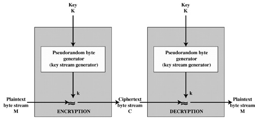
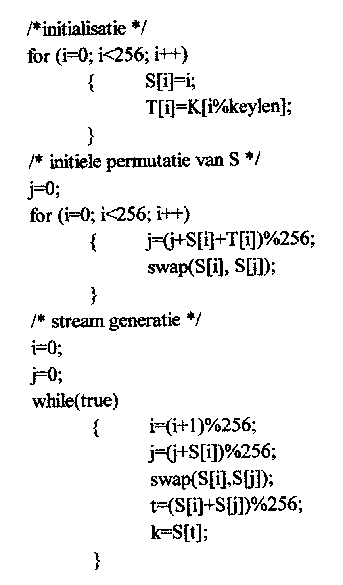

Een andere, veel gebruikte code, is RC4. Hierbij gaat men de klare tekst byte per byte EXORen met een berekende byte, volgens een zeer eenvoudig algoritme.

Bij RC4 zal men een rij getallen S[256] lang gebruiken en een andere rij T[256]. De sleutel K heeft een lengte keylen. We geven een C-achtige code:

Elke nieuwe byte uit de klare tekst zal men EXORen met de volgende berekende k. Vanzelfsprekend moet men er voor zorgen dat de laatste while-lus stopt na de laatste byte.